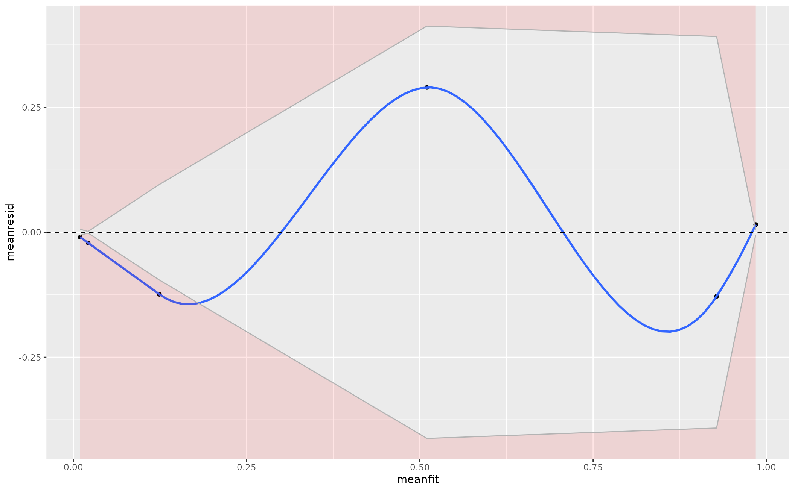

Generate a Binned-Residual Plot from a Fitted Generalized Linear Model
Source:R/binred_plot.R
binred_plot.Rdbinred_plot() provides a diagnostic of the fit of
the generalized linear model by "binning" the fitted and residual values
from the model and showing where they may fall outside 95% error bounds.
Arguments
- model
a fitted GLM model, assuming link is "logit"
- nbins
number of "bins" for the calculation. Defaults to the rounded square root of the number of observations in the model in the absence of a user-specified override here.
- plot
logical, defaults to TRUE. If TRUE, the function plots the binned residuals. If FALSE, the function returns a data frame of the binned residuals.
Value
bindred_plot() returns a plot as a ggplot2 object, as
a default. The y-axis is the mean residuals of the particular bin. The
x-axis is the mean fitted values from the bin. Error bounds are 95%.
A LOESS smoother is overlaid as a solid blue line.
If plot = FALSE, the function returns a data frame of the binned residuals
and a summary about whether the residuals are in the error bounds.
Details
The number of bins the user wants is arbitrary. Gelman and Hill (2007) say that, for larger data sets (n >= 100), the number of bins should be the rounded-down square root of the number of observations from the model. For models with a number of observations between 10 and 100, the number of bins should be 10. For models with fewer than 10 observations, the number of bins should be the rounded-down number of observations (divided by 2). The default is the rounded square root of the number of observations in the model. Be smart about what you want here.
Examples
M1 <- glm(vs ~ mpg + cyl + drat, data=mtcars, family=binomial(link="logit"))
binred_plot(M1)
#> 2 of 6 bins are inside the error bounds. That is approximately 33.33%. An ideal rate is 95%. An acceptable rate is 80%. Any lower than that typically indicates a questionable model fit. Inspect the returned plot for more.
#> `geom_smooth()` using method = 'loess' and formula = 'y ~ x'
#> Warning: Chernobyl! trL>n 6
#> Warning: Chernobyl! trL>n 6
#> Warning: NaNs produced
#> Warning: NaNs produced
#> Warning: no non-missing arguments to max; returning -Inf
